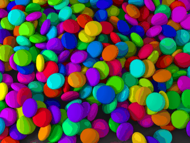

I implemented a GIF encoder from scratch, just for fun. It's written in PHP and isn't terribly fast. The code reads an image in PPM format, reduces the color space to 256 colors and then encodes the image using LZW compression.
A PPM file is the simplest image file format you can imagine. The file contains a two byte header ('P6'), some basic information (width, height) followed by a raw array of RGB pixels:
P6
469 352
255
...BINARY DATA...
Note: I used GIMP to create sunset.ppm and mms.ppm from jpg files.
The GIF file format requires us to convert the RGB image into an indexed form. The conversion is pretty simple:
image = orange | orange | purple | yellow | blue | yellow | ...Would become:
palette: 0 => orange 1 => purple 2 => yellow 3 => blue ... image: 0 | 0 | 1 | 2 | 3 | 2 | ...
I came up with the following algorithm to reduce the color space to 256 colors. It's a very naive and slow algorithm. It worked fine with the sunset image above.
It however does not work very well when the original image has too many colors:
LZW is pretty easy to implement. The main thing to keep in mind is that we are dealing with bits instead of bytes.
Once the data is compressed, creating the gif file is pretty easy. We need to output a header ("GIF87a"), some information about the image size, number of colors, etc.
We then store the palette, followed by the image data.
<?php
/**
* Just for the lolz... A gif encoder, in PHP :)
*/
if (count($argv) != 3) {
die( "Usage: $argv[0] input.ppm output.gif\n");
}
$input = $argv[1];
$output = $argv[2];
// Read the input file
$img = read_ppm($input);
// Build the palette and reduce the number of colors to 256 if needed
$colors = img_get_colors($img);
$n_colors = count($colors);
echo 'image contains ', $n_colors, ' colors', "\n";
if ($n_colors >= 256) {
$img = img_reduce_colors($img, $colors);
}
// Build the palette and indexed image
echo "Building palette\n";
$img = img_to_indexed($img);
// Compress the image
echo "Compressing image\n";
$lzw = new LZWGIFCompressor($img['log_num_colors']);
$data = $img['data'];
$start = count($data);
$i = 0;
foreach ($img['data'] as $pixel) {
$lzw->addPixel($pixel);
if ($i++ % 1000 == 0) {
echo ".";
}
}
echo "\n";
echo "Packing data\n";
$img_data = $lzw->done();
$width_low = $img['width'] & 0xff;
$width_high = ($img['width'] >> 8) & 0xff;
$height_low = $img['height'] & 0xff;
$height_high = ($img['height'] >> 8) & 0xff;
$image = array(
ord("G"), ord("I"), ord("F"), ord("8"), ord("7"), ord("a"),
$width_low, $width_high,
$height_low, $height_high,
0x80 | ($img['log_num_colors'] - 1),
0x00, // background color index
0x00, // pixel aspect ratio
);
// copy palette
foreach ($img['palette'] as $k => $v) {
$image[] = ($v >> 16) & 0xff;
$image[] = ($v >> 8) & 0xff;
$image[] = $v & 0xff;
}
$image = array_merge($image, array(
0x2c, // image starts now
0x00, // left
0x00,
0x00, // top
0x00,
$width_low, $width_high,
$height_low, $height_high,
0x00, // interlace, etc.
),
$img_data,
array(
0x3b, // end of image
)
);
echo "Writing bytes to file\n";
$r = '';
foreach ($image as $byte) {
$r .= chr($byte);
}
file_put_contents($output, $r);
echo "We are done!\n";
class LZWGIFCompressor {
protected $n_colors;
protected $n_bits;
protected $current_bits;
protected $output;
// LZW codes
protected $code_table;
protected $next_code;
protected $cc;
protected $eoi;
protected $prefix;
public function __construct($n_bits) {
$this->n_colors = pow(2, $n_bits);
$this->n_bits = $n_bits;
$this->prefix = '';
$this->initCodeTable();
$this->output[] = array($this->current_bits, $this->cc);
}
protected function initCodeTable() {
$this->code_table = array();
$this->next_code = 0;
for ($i = 0; $i < $this->n_colors; $i++) {
$this->code_table[chr($i)] = $this->next_code++;
}
$this->cc = $this->next_code++;
$this->eoi = $this->next_code++;
if ($this->n_bits == 1) {
$this->current_bits = 3;
$this->cc = $this->next_code++;
$this->eoi = $this->next_code++;
} else {
$this->current_bits = $this->n_bits + 1;
}
}
public function addPixel($palette_index) {
$string = $this->prefix . chr($palette_index);
if (isset($this->code_table[$string])) {
$this->prefix = $string;
} else {
$this->code_table[$string] = $this->next_code++;
$this->output[] = array(
$this->current_bits,
$this->code_table[$this->prefix]);
if (!isset($this->code_table[$this->prefix])) {
echo 'prefix not found: ', $this->prefix, "\n";
die;
}
if ($this->next_code == pow(2, $this->current_bits) + 1) {
$this->current_bits++;
}
if ($this->current_bits == 12) { // humm ???
// We maxed out the available bits, time to reset things
$this->output[] = array($this->current_bits, $this->cc);
$this->initCodeTable();
}
$this->prefix = chr($palette_index);
}
}
public function done() {
$this->output[] = array(
$this->current_bits,
$this->code_table[$this->prefix]);
$this->output[] = array(
$this->current_bits,
$this->eoi);
// Convert array of codes into byte stream
$bytes = array();
$current_byte = 0;
$bits_left = 8;
foreach ($this->output as $code) {
$current_bits = $code[0];
$current_code = $code[1];
while ($current_bits > 0) {
$bit = $current_code & 0x01;
$current_code = $current_code >> 1;
$current_byte = ($current_byte >> 1) | ($bit << 7);
$current_bits--;
$bits_left--;
if ($bits_left == 0) {
$bytes[] = $current_byte;
$current_byte = 0;
$bits_left = 8;
}
}
}
if ($bits_left < 8) {
$current_byte = $current_byte >> $bits_left;
$bytes[] = $current_byte;
}
$block = array();
$n = max(2, $this->n_bits);
$block[] = $n;
$i = 0;
while ($i<count($bytes)) {
$n = min(255, count($bytes) - $i);
$block[] = $n;
for ($j = 0; $j < $n; $j++) {
$block[] = $bytes[$i++];
}
}
$block[] = 0;
return $block;
}
}
function read_ppm($file) {
$fh = fopen($file, 'r');
// first line should be 'P6';
$line = rtrim(fgets($fh));
if ($line != 'P6') {
die($file . ' does not seem to be a valid .ppm file');
}
// read $width, $height and $color
$info = array();
while ($line = rtrim(fgets($fh))) {
if ($line[0] == '#') {
continue;
}
$t = preg_split('/\s+/', $line);
$info = array_merge($info, $t);
if (count($info) >= 3) {
break;
}
}
$width = $info[0];
$height = $info[1];
$color = $info[2];
if ($color >= 256) {
die('unhandled color size: '.$color);
}
$data = array();
while ($bytes = fread($fh, $width * 3)) {
for ($i=0; $i<strlen($bytes); $i+=3) {
$r = ord($bytes[$i]);
$g = ord($bytes[$i+1]);
$b = ord($bytes[$i+2]);
$data[] = ($r << 16) | ($g<<8) | $b;
}
}
return array(
'width' => $width,
'height' => $height,
'data' => $data
);
}
function img_get_colors($img) {
$colors = array();
foreach ($img['data'] as $color) {
if (!isset($colors[$color])) {
// note: the max distance can only be 195075
$colors[$color] = array('c' => 0, 'd' => 200000, 'n' => 0);
}
$colors[$color]['c']++;
}
return $colors;
}
function color_distance($c1, $c2) {
$r = (($c1 >> 16) & 0xff) - (($c2 >> 16) & 0xff);
$g = (($c1 >> 8) & 0xff) - (($c2 >> 8) & 0xff);
$b = ($c1 & 0xff) - ($c2 & 0xff);
return $r * $r + $g * $g + $b * $b;
}
/**
* Naive image reduction algorithm
*/
function img_reduce_colors($img, $colors) {
$palette = array();
echo "Reducing color count\n";
while (count($palette) < 256) {
if (count($palette) % 10 == 0) {
echo '.';
}
// choose the most popular color
$most_popular = 0;
$most_popular_count = -1;
foreach ($colors as $k => $v) {
if ($v > $most_popular_count) {
$most_popular_count = $v;
$most_popular = $k;
}
}
$palette[] = $most_popular;
$colors[$most_popular] = array('c' => 0, 'd' => 0, 'n' => $most_popular);
// recompute the 'd' given this new color and choose the furthest color
$most_diverse = 0;
$most_diverse_distance = 0;
foreach ($colors as $k => $v) {
$d = color_distance($k, $most_popular);
if ($colors[$k]['d'] > $d) {
$colors[$k]['d'] = $d;
$colors[$k]['n'] = $most_popular;
}
if ($colors[$k]['d'] > $most_diverse_distance) {
$most_diverse_distance = $colors[$k]['d'];
$most_diverse = $k;
}
}
$palette[] = $most_diverse;
$colors[$most_diverse] = array('c' => 0, 'd' => 0, 'n' => $most_diverse);
// recompute the 'd' given this new color
foreach ($colors as $k => $v) {
$d = color_distance($k, $most_diverse);
if ($colors[$k]['d'] > $d) {
$colors[$k]['d'] = $d;
$colors[$k]['n'] = $most_diverse;
}
}
}
echo "\n";
$img2 = array(
'width' => $img['width'],
'height' => $img['height'],
'data' => array()
);
foreach ($img['data'] as $color) {
$img2['data'][] = $colors[$color]['n'];
}
return $img2;
}
function img_to_indexed($img) {
$palette_rgb = array();
$palette_index = array();
$next_color = 0;
$new_data = array();
foreach ($img['data'] as $rgb) {
$color = null;
if (!isset($palette_rgb[$rgb])) {
$color = $next_color;
$palette_rgb[$rgb] = $color;
$palette_index[$color] = $rgb;
$next_color++;
} else {
$color = $palette_rgb[$rgb];
}
$new_data[] = $color;
}
if ($next_color == 1) {
// We need to have at least two colors
$palette_index[$next_color++] = 0x000000;
}
echo 'image contains ', $next_color, ' colors', "\n";
// Fill up the palette to the closest power of 2
$log_num_colors = ceil(log($next_color) / log(2));
$num_colors = pow(2, $log_num_colors);
while ($next_color < $num_colors) {
$palette_index[$next_color++] = 0;
}
$img['data'] = $new_data;
$img['palette'] = $palette_index;
$img['log_num_colors'] = $log_num_colors;
return $img;
}
{kind=link}